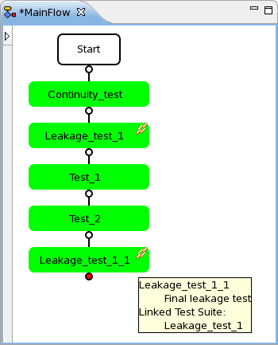

Cloning nodes
When you clone a node, you create an exact replica of the original node (including any associated data, flags, binning rules, etc). For test suite nodes, the only difference to the original is the test suite name that identifies the clone.
Before you begin
Make sure that at least one node has been inserted into the testflow.
Procedure
Results
In the Flow Sequence Editor, the clone of the node appears at the selected position.
In the Flow Data Editor, on the Test suites page, the clone of the test suite node also appears; on the Bins page, there is no separate row for the clone of the bin as all the clones of a bin are mapped to the original bin.
Clones of test suite nodes (Linked test suites)
A numbered suffix is attached to the name of the clone. This allows you to distinguish a cloned test suite from its original. The name of the clone may be modified according to your needs.
To change the test settings in a cloned test suite without affecting all other clones:
- Create a copy of the cloned test suite directly after the test suite.
- Delete the cloned test suite.
- Edit the test settings in the copied test suite.
The following screen shot shows a cloned test suite node. Both the source node and the clone are marked with a link symbol in the upper right corner. The tooltip of the nodes shows the other test suite node(s) as "Linked Test Suite(s)".

Clones of bin nodes
The node name remains unchanged. Changing the settings of one bin results in all clones including the original bin having their setting changed.
What to do next
Save the testflow.
Functional changes
- Introduced before SmarTest 6.3.2
- SmarTest 6.5.2: You can clone the test suite and bin nodes in the Flow Sequence Editor.